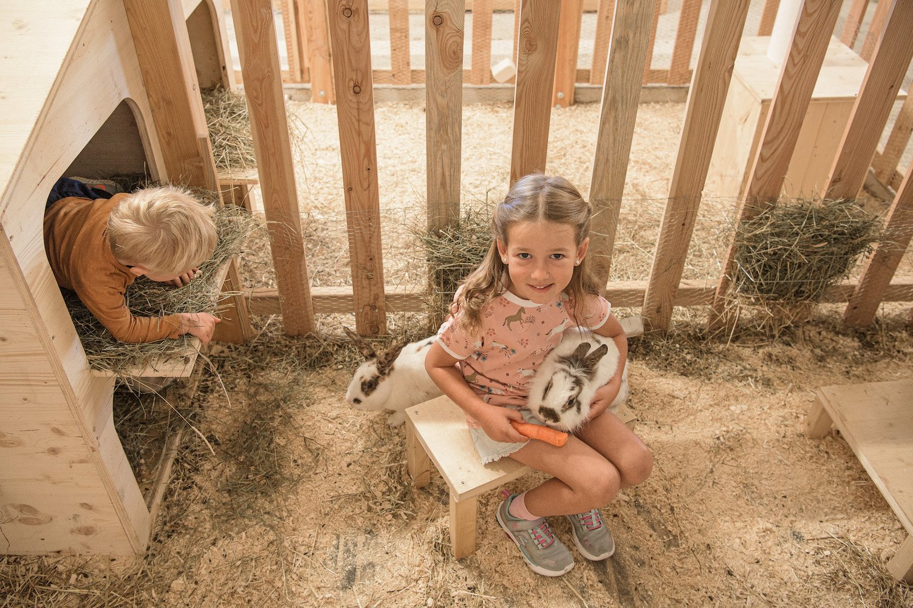
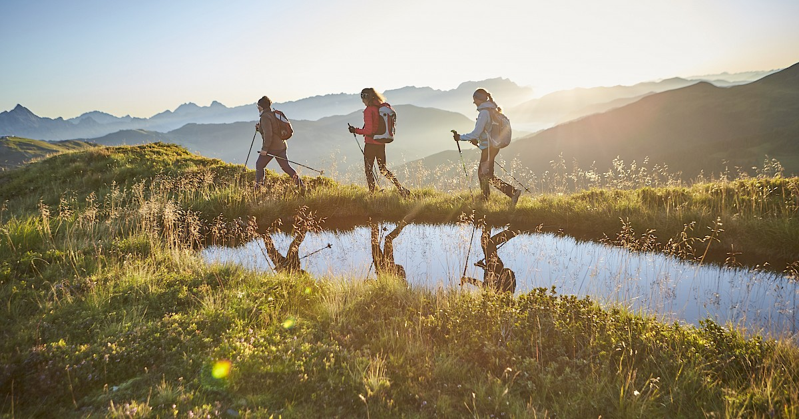
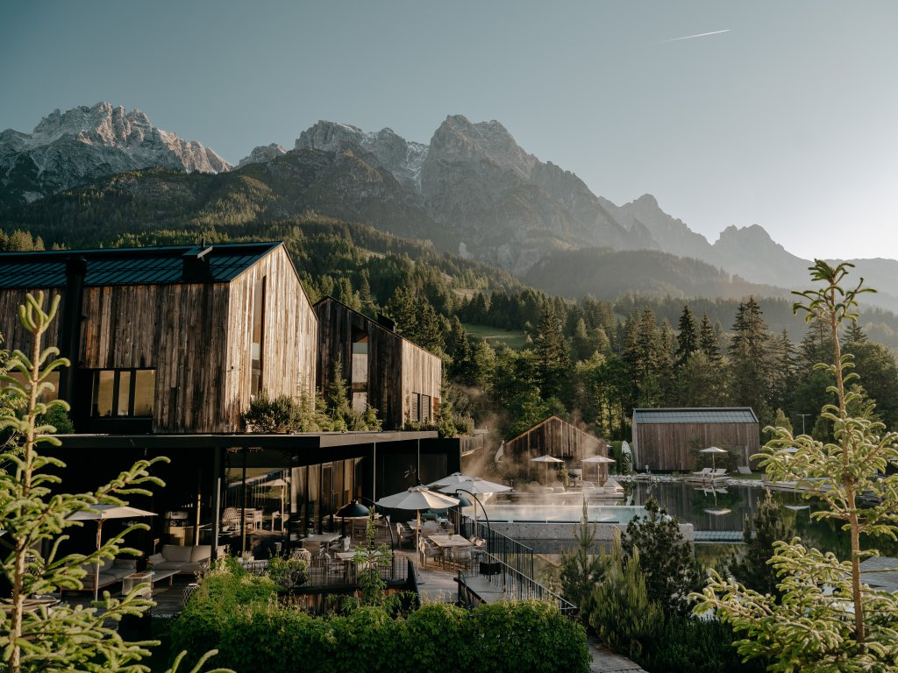
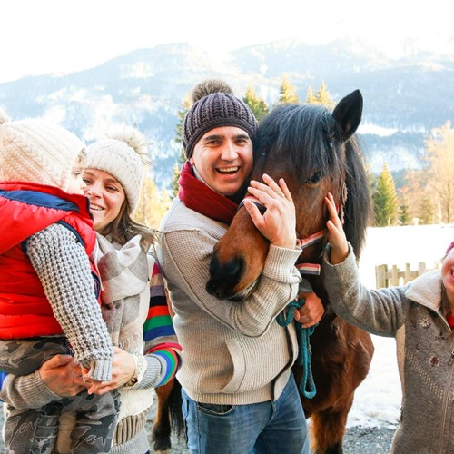

CHF/€85–125
Apartment on a working farm
Kitchen, space, livestock outside, and a host family nearby. Usually the best value, but cleaning fees can punish a one-night stay.
One-off lodging research · July 2026
Eleven real farm stays between Appenzell, Austria, and Slovenia—priced, sorted, and tested against the shape of the route. This is a lodging field guide, not another trip.


01 / THE MARKET
The useful distinction is not country—it is how close you want to get to actual farm life. A low price does not automatically mean rustic, and a beautiful farmhouse does not automatically include animals, meals, or hosted activities.
CHF/€85–125
Kitchen, space, livestock outside, and a host family nearby. Usually the best value, but cleaning fees can punish a one-night stay.
€129–170
Breakfast or dinner, a stronger sense of place, and more interaction. This is the sweet spot for a memorable two-night stop.
€190–675+
Design-led rooms, wellness, organized animal experiences, and hotel-like polish. Easier with a baby; less of a bargain.
02 / THE SHORTLIST
Best early-route swap
The most literal farm stay on the list: cows, pigs, cats, a dog, mountain views, and a family apartment in the green folds beneath the Alpstein.
Baby read: lots of space and animals; the cleaning fee makes two or three nights more sensible than one. The farm asks families to contact them for child discounts.
 Best architecture
Best architecture
A classic dark-timber Bregenzerwald house with a modern apartment inside—less chore-oriented, more about living inside the region’s architecture.
Baby read: a calm apartment setup with a kitchen. Choose it for timber-house atmosphere, not a guaranteed animal program.
Easiest premium option
A polished organic dairy farm minutes outside Innsbruck, with solid-wood rooms, a petting zoo, farm tours, milk tasting, and private lake access.
Baby read: the highest-comfort choice and the easiest operationally. It is farm-resort pricing rather than a budget play.

Best resort route fitThe most practical full-resort alternative near the existing corridor: animal feeding, eleven ponies, baby care, indoor and outdoor pools, and an all-inclusive setup above Radstadt.
Baby read: the strongest operational fit with an infant: published baby care up to age one, blackout curtains, cots and baby pool. The September offer says children through 15 stay free, but request the exact family total.

Best true farm hotelA genuine farm wrapped in a family hotel: cows, goats, mini-pigs, cats and horses, plus childcare, wellness and three-quarter board. It feels more farm-rooted than the polished nature resorts.
Baby read: easier than a self-catering farm because meals, wellness and childcare are built in. The minimum stay makes it a route-shaping choice rather than a quick overnight.

Best luxury benchmarkA 400-year family property evolved into a serious luxury hotel, with the miniGUT children’s farm, petting zoo, riding stable, extensive forest spa and food sourced partly from its own farm.
Baby read: maximum polish and very low daily friction, but this is closer to a five-star nature hotel with farm experiences than living on a working farm. At the four-night minimum, the adult package starts near €675/night.

Best value resort packageA four-star family hotel with the farm directly beside it, regular animal treks, ponies, donkeys, goats, sheep and llamas—plus baby care, pools and a fully catered stay.
Baby read: the best published resort value and unusually easy with a baby, but the seven-night package is too long for the current route unless the trip is simplified around it. Child pricing can change the quoted family total.
 Best lake-country anchor
Best lake-country anchor
A quiet hereditary farm above Wolfgangsee with farm products, garden space, rooms, and family apartments—more rural than sleeping in St. Wolfgang itself.
Baby read: generous layout and slow mornings; slightly less central for Gosausee and Hallstatt than Gosau, but stronger farm character.
 Easiest Slovenia swap
Easiest Slovenia swap
Two kilometers from Bled, but with goats, gardens, homemade breakfast, a playground, sauna, and enough countryside to feel separate from the lake crowds.
Baby read: the best balance of price, breakfast, play space, and zero route distortion. Confirm the room category and infant setup directly.
Best overall experience
Eight preserved farm buildings under the Grintovci mountains, native-breed animals, farm cooking, sauna, and a real sense that the stay itself is the destination.
Baby read: children through age two are free; cot is €10/day. This is the one to choose if the farm stay should become a trip highlight rather than just lodging.
 Best Soča Valley fit
Best Soča Valley fit
A hill farm beneath Mount Krn with family rooms, farm-grown breakfasts and dinners, hiking advice, and direct access to the quieter side of the Soča Valley.
Baby read: meals and a kitchenette option can simplify the day. This rate is less certain than the others—use it as a range marker and request a direct quote.
No stays match this filter.
03 / HOW TO USE ONE
The best farm-stay version replaces an existing base. It does not create a new one-night stop just to tick a box.
Spend 2–3 nights at Brülisauer instead of a village hotel. Keep Ebenalp, Seealpsee, and Appenzell town exactly as planned.
Added route time: essentially noneUse Edenhauserhof as the Innsbruck base. You gain farm life without sacrificing city access or introducing a new transfer day.
Added route time: negligibleUse Rußbachbauer for Schafberg, Wolfgangsee, Bad Ischl, and one longer Gosausee/Hallstatt day. Better farm feel; slightly worse lake-district geometry.
Tradeoff: longer drives to GosauInsert two nights in Jezersko between Austria and Bled. Do this only if the heritage farm, meals, and valley are worth trimming another base.
Tradeoff: deliberate detourPri Biscu preserves the Bled/Bohinj plan and adds breakfast, animals, and breathing room for less than many lakeside hotels.
Added route time: essentially noneBase near Kobarid for Kozjak, Drežnica, the Nadiža, and the southern Soča. This favors slow valley days over quick access to Vršič.
Tradeoff: south-biased valley base04 / THE VERDICT
Lowest friction, strong value, breakfast included, and only a few minutes from Bled.
The strongest farm experience and the only stay here that justifies reshaping the route around it.
Farm authenticity with hotel-level ease, directly beside a base already in the route.
If adding only one: choose Pri Biscu for efficiency or Šenkova for the story. Do not add both unless farm stays are becoming a primary theme of the journey.
Farm-resort read: Seitenalm is the easiest resort to fold into this route, Ramsi is the strongest published package value, Oberschwarzach feels most like a real farm, and Forsthofgut is the luxury ceiling.
05 / SOURCE TRAIL
Rates were checked on July 19, 2026. “From” prices and association catalog prices can change with dates, occupancy, cleaning, local tax, and minimum stays.
Appenzellerland Tourism’s official accommodation listing and published farm-apartment price.
Open source ↗Official farm pages and Austria’s Urlaub am Bauernhof listings, which show current from-rates and inclusions.
Open source ↗Property price lists, the Slovenian Tourist Farm Association, and the official Soča Valley accommodation directory.
Open source ↗Request a direct quote for the exact dates, two adults plus infant, cot, cleaning, breakfast, parking, and cancellation terms.
Return to shortlist ↑Property imagery is sourced from the corresponding official tourism or property pages and used here only to support this private planning comparison.